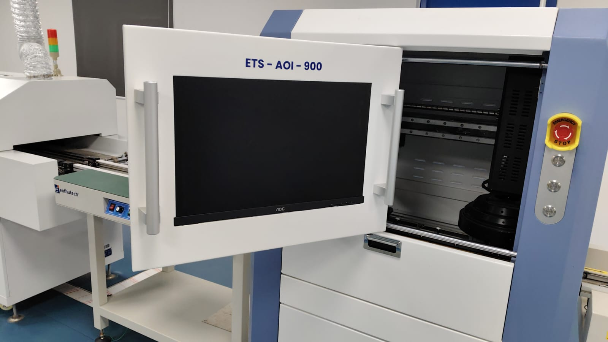

AI-Augmented PCB Optical Inspection
AOI PRO is a decision-support layer for industrial PCB inspection. It registers each board to a golden reference, detects anomalies by unsupervised change detection, and fuses its verdict with the AOI machine — auto-clearing good boards and escalating only the uncertain ones to a human.

Engineered for Precision
Our tri-tier analysis pipeline ensures maximum reliability across high-mix production lines.
Registration & ROI
Each board is auto-cropped to remove conveyor rails, its type is detected, and it is aligned to a golden reference with ORB + ECC sub-pixel registration.
- check_circle Auto board-type detection
- check_circle Sub-pixel ECC alignment
Golden Change Detection
Every board is compared to its golden reference with a per-pixel z-score anomaly map — catching localized defects and pinpointing them with a heatmap.
AOI + AI Consensus
The AI verdict is fused with the AOI machine's call: both agree → auto PASS/FAIL; they disagree → routed to a human. Good boards are never auto-rejected.
- check_circle Never auto-rejects good boards
- check_circle Human review on disagreement
Explore the project
An M.Tech VLSI Design project: a golden-template inspection pipeline with a six-state AOI + AI decision layer and a bit-exact FPGA change-detection accelerator. Try the live demo or browse the source code.